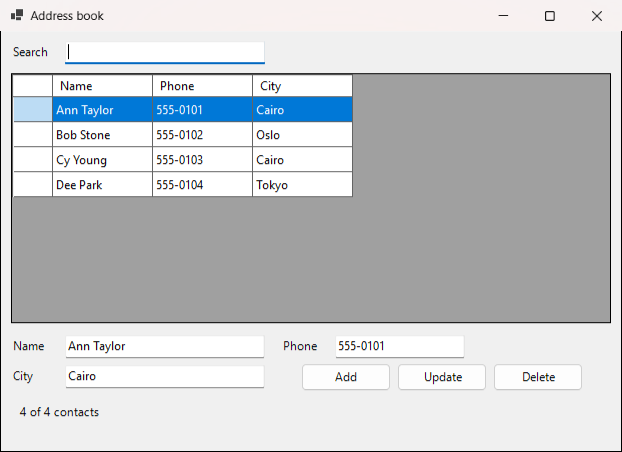

Tutorial 48: A project: an address book with a database
A real application: contacts stored in a database, shown in a data grid, searched as you type, added, changed and deleted. Windows Forms and Entity Framework working together.
What you will learn#
- connecting a database to a window,
- a
DataGridViewas a view of the database (not the data itself), - searching with SQL parameters while typing,
- keeping the grid, the fields and the database consistent,
- tests for a complete application.
The design#
Three layers, as in tutorial 35:
| Layer | Holds |
|---|---|
Database (oDb) | the truth: the contacts, stored in a SQLite file |
Grid data (oTable) | a copy of the rows that match the search, for display |
| Window | the grid, the search box, the fields and the buttons |
The golden rule: the database changes first, then the grid is reloaded. The grid is never edited directly, so it can never disagree with the database.
The program#
# Tutorial 48: a project - an address book with a database (Windows Forms + Entity Framework + a data grid)
load "dotnet.ring"
using {
"System.Data"
"System.Drawing"
"System.Windows.Forms"
"RingDotNet.Data"
}
oForm = ""
oDb = ""
oTable = "" # a DataTable: what the grid shows, filled from the database
oGrid = ""
oName = ""
oPhone = ""
oCity = ""
oSearch = ""
oStatus = ""
func main
# THE DATABASE: a file next to the program (a test uses memory, so that it leaves nothing behind)
cConnection = "Data Source=addressbook.db"
if uiSelfTest()
cConnection = "Data Source=:memory:"
ok
oDb = new RingDatabase(cConnection,[
["Contacts",[["Id","int",1],["Name","string",0,[["required",1],["maxlength",60]]],["Phone","string",0],["City","string",0]]]
])
# THE WINDOW
oForm = uiForm("Address book",620,420)
uiLabel(oForm,"Search",10,12,50,22)
oSearch = uiTextBox(oForm,64,10,200,24)
oSearch.setTextChangedEvent("reload()") # every letter that is typed narrows the list
oTable = new DataTable()
oTable.Columns.Add([ :columnName = "Id", :type = "System.Int32" ])
oTable.Columns.Add([ :columnName = "Name", :type = "System.String" ])
oTable.Columns.Add([ :columnName = "Phone", :type = "System.String" ])
oTable.Columns.Add([ :columnName = "City", :type = "System.String" ])
oGrid = new DataGridView() {
Location = new Point(10,42)
Size = new Size(600,250)
DataSource = oTable
ReadOnly = True
AllowUserToAddRows = False
SelectionMode = "FullRowSelect"
MultiSelect = False
}
oForm.Controls.Add(oGrid)
oGrid.setDataBindingCompleteEvent("hideKey()") # the columns exist only after the grid was bound
oGrid.setSelectionChangedEvent("rowChosen()")
# THE FORM below the grid: the fields of the chosen contact
uiLabel(oForm,"Name",10,306,50,22)
oName = uiTextBox(oForm,64,304,200,24)
uiLabel(oForm,"Phone",280,306,50,22)
oPhone = uiTextBox(oForm,334,304,130,24)
uiLabel(oForm,"City",10,336,50,22)
oCity = uiTextBox(oForm,64,334,200,24)
uiButton(oForm,"Add",300,332,90,28,"addContact()")
uiButton(oForm,"Update",396,332,90,28,"updateContact()")
uiButton(oForm,"Delete",492,332,90,28,"deleteContact()")
oStatus = uiLabel(oForm,"",10,372,600,22)
reload()
uiTest(oForm,"selfTest()")
uiRun(oForm)
uiEnd()
# ---------------------------------------------------------------- database -> grid
# read the rows that match the search text into the DataTable that the grid shows
func reload
oTable.Rows.Clear()
cFind = trim(oSearch.Text)
if cFind = ""
aRows = oDb.all("Contacts")
else
aRows = oDb.where("Contacts","Name LIKE {0} OR City LIKE {0}",["%" + cFind + "%"])
ok
for aRow in aRows
oTable.Rows.Add([dbValue(aRow,"Id"),dbValue(aRow,"Name"),dbValue(aRow,"Phone"),dbValue(aRow,"City")])
next
oStatus.Text = " " + oTable.Rows.Count + " of " + oDb.count("Contacts") + " contacts"
# ---------------------------------------------------------------- grid -> fields
# the key is not shown to the user
func hideKey
if oGrid.Columns.Count > 0
oGrid.Columns.Item(0).Visible = False
ok
# the key of the chosen row, or 0 when no row is chosen
func currentId
if oGrid.SelectedRows.Count = 0
return 0
ok
return oGrid.SelectedRows.Item(0).Cells.Item(0).Value
func rowChosen
if oGrid.SelectedRows.Count = 0
return
ok
oRow = oGrid.SelectedRows.Item(0)
oName.Text = oRow.Cells.Item(1).Value
oPhone.Text = oRow.Cells.Item(2).Value
oCity.Text = oRow.Cells.Item(3).Value
# ---------------------------------------------------------------- the buttons
func addContact
cName = trim(oName.Text)
if cName = ""
oStatus.Text = " A contact needs a name"
return
ok
oDb.insert("Contacts",[["Name",cName],["Phone",trim(oPhone.Text)],["City",trim(oCity.Text)]])
clearFields()
reload()
func updateContact
nId = currentId()
if nId = 0 or trim(oName.Text) = ""
return
ok
oDb.update("Contacts",nId,[["Name",trim(oName.Text)],["Phone",trim(oPhone.Text)],["City",trim(oCity.Text)]])
reload()
func deleteContact
nId = currentId()
if nId = 0
return
ok
if uiAsk("Delete " + oName.Text + "?","Delete")
oDb.remove("Contacts",nId)
clearFields()
reload()
ok
func clearFields
oName.Text = ""
oPhone.Text = ""
oCity.Text = ""
func selfTest
for aPerson in [["Ann","555-0101","Cairo"],["Bob","555-0102","Oslo"],["Cy","555-0103","Cairo"]]
oName.Text = aPerson[1]
oPhone.Text = aPerson[2]
oCity.Text = aPerson[3]
addContact()
next
dnAssert("three contacts in the database",oDb.count("Contacts"),3)
dnAssert("three rows in the grid",oGrid.Rows.Count,3)
oName.Text = ""
addContact()
dnAssert("a name is required",oStatus.Text," A contact needs a name")
oSearch.Text = "cairo"
dnAssert("the search narrows the grid (case does not matter)",oGrid.Rows.Count,2)
oSearch.Text = ""
oGrid.Rows.Item(1).Selected = True
dnAssert("choosing a row fills the fields",oName.Text,"Bob")
oName.Text = "Robert"
updateContact()
dnAssert("an update reaches the database",dbValue(oDb.byKey("Contacts",2),"Name"),"Robert")
oGrid.Rows.Item(1).Selected = True # reload() cleared the selection: choose Robert again
deleteContact() # a test answers the question with yes
dnAssert("a delete",oDb.count("Contacts"),2)
dnAssert("Robert is gone",oDb.byKey("Contacts",2),"")
dnAssert("and the grid follows",oGrid.Rows.Count,2)
[question] Delete: Delete Robert?
SELFTEST OK (9 checks)How it works#
The database#
A table Contacts with a required Name (at most 60 characters), Phone and City. The program uses a file addressbook.db next to it, so the contacts are there the next time; a test uses memory (:memory:) so it leaves nothing behind. (Tutorial 17 explains the schema.)
The grid and reload#
DataGridView.DataSource = oTable shows a DataTable. reload() is the heart of the program: it clears the table, asks the database for the rows that match the search text, and adds one row per contact. It is called at the start and after every change. The status line says 3 of 4 contacts.
Search as you type#
oSearch.setTextChangedEvent("reload()") reloads on every key. The query uses SQL parameters:
oDb.where("Contacts","Name LIKE {0} OR City LIKE {0}",["%" + cFind + "%"])LIKE with % means "contains"; SQLite compares case-insensitively for ordinary letters, so cairo finds Cairo. The text is passed as a parameter, never pasted into the SQL: a visitor who types '; drop table gets no result, not a disaster.
Hiding the key#
The key column Id is needed to know which contact a row is, but the user should not see it. The grid creates its columns only after it is bound and shown, so the program hides the column in the DataBindingComplete event (hideKey), when the columns exist.
From grid to fields#
setSelectionChangedEvent("rowChosen()") fills the text boxes from the selected row. currentId() reads the hidden key of the selected row (SelectedRows) — the key tells update and remove which database row to change.
The buttons#
| Button | Does |
|---|---|
| Add | checks the name, inserts, clears the fields, reloads |
| Update | updates the chosen contact with the fields, reloads |
| Delete | asks uiAsk, removes, clears, reloads |
reload() clears the grid, and with it the selection: after an update the program does not know which row the user had. A friendlier version remembers the key and selects that row again (exercise 2).
The test#
The test adds three contacts through the fields and the Add button, checks the database count and the grid rows, tries a contact without a name, searches cairo, selects a row and checks that the fields follow, updates, deletes (the test uiAsk answers yes) and checks the database and the grid again. This test is the best documentation of how the program should behave.
What you learned#
- the database is the truth, the grid is a view,
- one
reload()after every change, - search with
LIKEand parameters, DataBindingCompletefor column settings,- test through the same controls the user uses.
Exercises#
- Sort the contacts by name (
["orderby",...]withquery, tutorial 17). - After an update, select the row with the same key again.
- Add a
Notestable with several notes per contact and show them in a second grid (tutorial 27). - Export the contacts to CSV (tutorial 30).